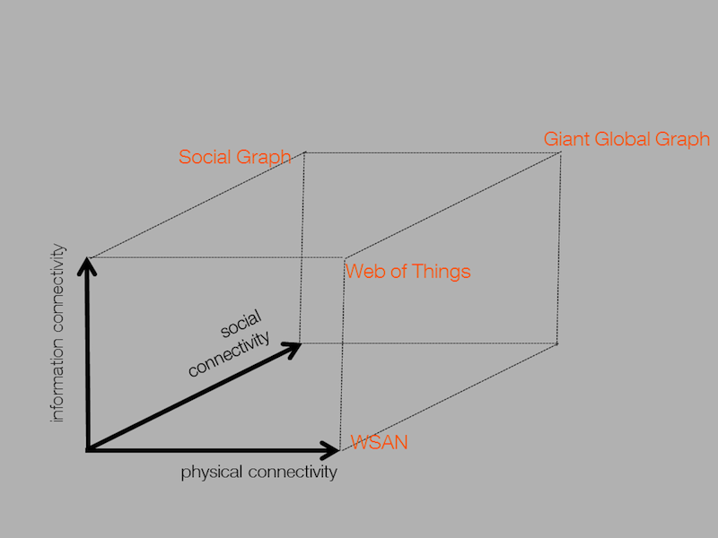
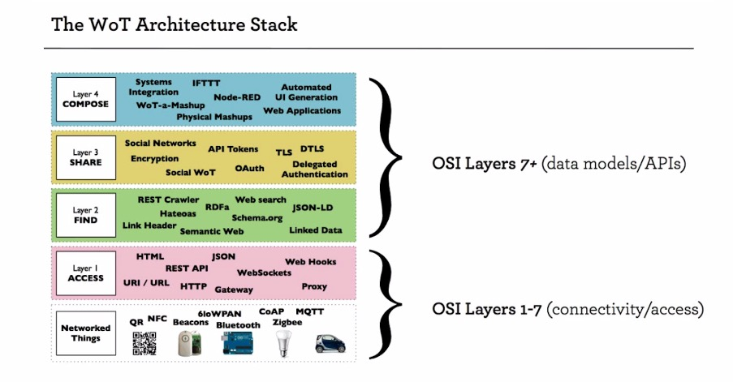
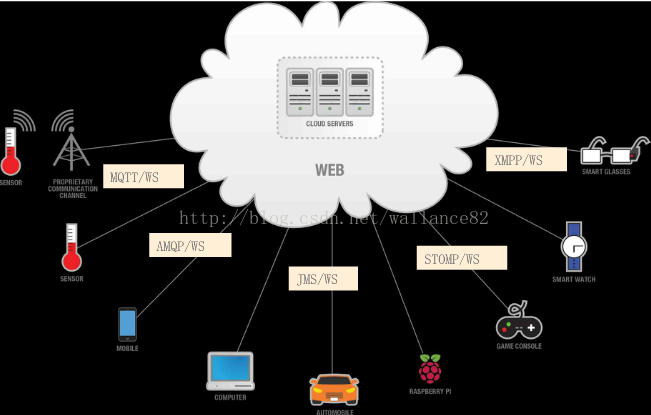

Web of Things (WoT)
IoT 意味着所有设备能够相互连结，进而形成物联网。而设备沟通能够通过各种方式如 Bluetooth, ZigBee 和 WIFI 等等。IoT 的最后阶段 WoT 则是将这些沟通方式最后都通过统一 Web 标准的方式来达成。这也是以往所有新技术最终能得到蓬勃发展的重要因素之一：统一的标准和规范。——摘自《 IoT 第四階段 : Web of Things (WoT) 》
三维连接的交接面：

现状
Google 的 Physical Web
Apple 的 iBeacon
类 Node.js 方案
| 物联网 JS 框架 | 说明 |
|---|---|
| Ruff | 基于 Duktape |
| IoT.js 和 JerryScript | IoT.js 平台使用 JerryScript 引擎来运行 JavaScript 代码，使用 libuv 库来实现异步I/O。 |
| Mongoose IoT Platform |
Node.js 方案
| 物联网 JS 框架 | 说明 |
|---|---|
| WoT.City | 开源 WoT 框架 |
| Cylon.js | 智能机器人和 IOT 的 JavaScript 开发框架，号称支持不下35种平台，使得开发人员可以使用同样的API来操纵不同的设备，包括 Leap Motion，Pebble 手表，Arduinos 和 Raspberry Pi 等。 |
| noduino | 一个简单、灵活的基于 JavaScript 和 Node.js 的框架，能实现通过HTML5、Socket.IO 和 Node.js 等 Web 应用实现对 Arduino 板的控制 |
WoT Devices 层
| JS 框架 | 说明 |
|---|---|
| shoe | 实现 websocket |
| dnode | 实现 RPC |
| Mosca、MQTT.js | MQTT |
其它开源方案
| 说明 | |
|---|---|
| Streembit | 分散式、对等网络，人类和机器的安全通信系统 |
技术栈架构

组成
最简版 WoT 涉及 6 类设备、5类接口。
6 类设备：
- UA
- WoT Server
- Service Resources
- WoT Device
- Sensors
- Event Trigger
5 类接口：
G
- UA－WoT Server：HTTPS, RESTful，JSON；数据采集与上报、远程控制操作、多应用数据采集与传出、管理多个WoT Devices。用到的协议如 WebRTC、SSE 和 Web notification
- WoT Server－Service Resources：与外置服务集成，数据交换、同步状态和信息。外置服务如服务器、云、开放 API 和 Web 资源
- WoT Server－Sensors／硬件：内置／外置连结。如 I2C、SPI、UART、蓝牙 等
- WoT Server－WoT Device：多 WoT Device 识别、协作。如 HTTP、Web Socket 和 CoAP 等
- Event Trigger－WoT Server：向 WoT Server 推送消息。如 MQTT 等基于订阅的协议
安全要求
- WoT Device / WoT Server 授权
- WoT Service / WoT 应用认证
- WoT应用支持数据交互保密性
- WoT 终端 应可以验证数据完整性
- 防止网络连接滥用
- WoT 系统应能保护隐私
参考
- WoT简介
- Web of Things Sales Sheet
- W3C WEB OF THINGS INTEREST GROUP
- WoT Current Practices
- Simple Web of Things (SWoT) Architecture Model
- Web Thing Model
- IoT第四階段 : Web of Things (WoT)
- Web of Things (WoT) Architecture
- 基于Web服务的物联网-WoT(Web of Things)
- Building IoT systems with Web standards
- WoT.City
- IoT and Maker Crossover (IMCO) Conference 2015
- WoT Outreach: joint slide set Outreach slide set aims to increase the awareness of W3C’s WoT work
- WOT BOOK LINKS
- Building the web of things
- The Limitations of the IoT and How the Web of Things Can Help
- MQTT-Node.js实现-Mosca简介
- A new way to write IoT application server code
- WoT.js - WoT App. Framework for Open Source Hardware
- Internet of Things Protocols and Standards
- WoT 与 IoT
- 互联网与物联网
- 关于高级辅助驾驶系统 ADAS